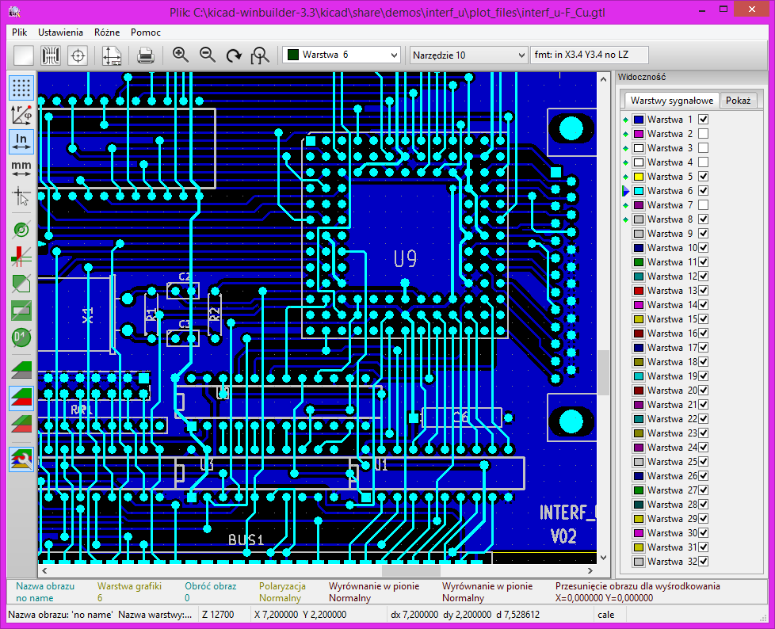
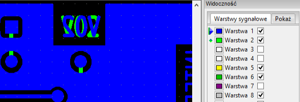
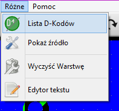

GerbView
Przegl±darka plików Gerber i Excellon
Spis tre¶ci
- Wprowadzenie
- D-Kody, Apertury a pliki Gerber
- Krótki opis dzia³ania fotoploterów
- Prostota, czyli tzw. "miecz obosieczny"
- Zawarto¶æ plików Gerber
- G-Kody - Ustawianie warunków pocz±tkowych
- D01, D02, D03 - Polecenia rysowania i b³ysków
- D10-D999 - Pozycjonowanie ko³a z aperturami
- Ró¿ne M-Kody
- Dane o koordynatach X,Y
- Pomijanie przecinków
- Pomijanie zer pocz±tkowych i koñcowych
- Dane modalne o koordynatach
- Komendy modalne
- Komendy dotycz±ce rysowania zaokr±gleñ: G02/G03 i G75
- Format RS274X - Informacje podstawowe
- GerbView - Obs³uga programu
Prawa autorskie
Copyright © 2010-2014. Ten dokument jest chroniony prawem autorskim. Lista autorów znajduje siê poni¿ej.
Mo¿esz go rozpowszechniaæ oraz modyfikowaæ na zasadach okre¶lonych w GNU General Public License (http://www.gnu.org/licenses/gpl.html), wersja 3 lub pó¼niejsza, albo okre¶lonych w Creative Commons Attribution License (http://creativecommons.org/licenses/by/3.0/), wersja 3.0 lub pó¼niejsza.
Wszystkie znaki towarowe u¿yte w tym dokumencie nale¿± do ich w³a¶cicieli.
Autorzy
Steve DiBartolomeo, Jean-Pierre Charras, Fabrizio Tappero, Kerusey Karyu.
Kontakt
Wszelkie komentarze lub sugestie dotycz±ce tego dokumentu prosimy kierowaæ na listê dyskusyjn± deweloperów programu KiCad: https://launchpad.net/~kicad-developers
Podziêkowania
Steve DiBartolomeo, Application Manager
Artwork Conversion Software, Inc.
© 1991 Artwork Conversion Software, Inc.
Wersja
19 Pa¼dziernika 2014
Informacja dla u¿ytkowników komputerów Apple Macintosh
Wsparcie programu KiCad dla systemu operacyjnego Apple OS X jest w zaawansowanej fazie eksperymentalnej.
1. Wprowadzenie
Nie wa¿ne jak potê¿ne mo¿e byæ oprogramowanie do projektowania, gdy¿ wszystko sprowadza siê do tego, i¿ na koñcu trzeba bêdzie stworzyæ plik dla fotoplotera w formacie Gerber by utworzyæ klisze. Istniej±c± przepa¶æ pomiêdzy projektem p³ytki a procesem jej fizycznej realizacji, mo¿na zmniejszyæ poprzez lepsze zrozumienie tego, co jest zawarte w pliku dla fotoplotera i w jaki sposób przek³ada siê to na finalny produkt. Wszystko dlatego, ¿e nieporozumienia pomiêdzy projektantem PCB i operatorem fotoploera s± w du¿ej mierze odpowiedzialne za du¿y procent z³ych klisz produkowanych w tej bran¿y. A to kosztuje.
Dlatego te¿, przed opisem w³a¶ciwego programu do przegl±dania plików Gerber jakim w KiCad EDA Suite jest GerbView, powinni¶my siê zapoznaæ z podstawowymi informacjami na temat dzia³ania fotoploterów i formatów plików jakie s± przez nie akceptowane.
Osoby, które mia³y do czynienia z plikami Gerber i znaj± ju¿ te informacje mog± od razu przej¶æ do rozdzia³u czwartego.
2. D-Kody, Apertury a pliki Gerber
Krótki opis dzia³ania fotoploterów
Przed rozpoczêciem zg³êbiania szczegó³ów plików fotoplotera, krótka dyskusja o dzia³aniu fotoploterów pozwoli by dalszy materia³ by³ ³atwiejszy do strawienia.
Wczesne fotoplotery sk³ada³y siê z precyzyjnej p³yty napêdzanej przez serwomechanizm pozycjonuj±cy X-Y, do którego przytwierdzony jest kawa³ek wysoko-kontrastowej kliszy. Mocne ¼ród³o ¶wiat³a jest kierowane przez migawkê i przez otwory ko³a apertur, i skoncentrowane na kliszy. Kontroler przetwarza polecenia Gerber w odpowiednie ruchy p³yty, obroty ko³a i otwarcia migawki.

Rys 1 - Schemat dzia³ania fotoplotera
Gdy migawka zostaje otwarta, ¶wiat³o pada przez aperturê, tworz±c jej obraz na kliszy. Gdy p³yta porusza siê podczas otwarcia migawki, powstaje na kliszy linia lub pasek. Dostarczaj±c odpowiednich poleceñ dla mechanizmu przesuwu, mechanizmu apertur i migawki mo¿na utworzyæ prawie dowolny obraz na kliszy.

Rys 2 - Praca plotera
Prostota, czyli tzw. "miecz obosieczny"
Ca³e piêkno w bazie poleceñ Gerber to ich prostota. S± tylko cztery g³ówne polecenia i dane o po³o¿eniu. Baza poleceñ musia³a byæ prosta i zwarta, poniewa¿ pierwsze maszyny sterowane by³y kruchymi ta¶mami perforowanymi. Potrzeba kompresji jak najwiêkszej ilo¶ci informacji w kilkunastu bajtach, wyja¶nia pochodzenie wielu "problemów", z którymi mamy do czynienia dzisiaj, gdy miejsce jest mierzone w gigabajtach a nie w setkach bajtów.
Prostota jednak ma równie¿ swoj± cenê. W plikach Gerber brakuje istotnych informacji niezbêdnych do uruchomienia plotera. Te brakuj±ce dane przekazywane od projektanta do operatora plotera oddzielnie s± czêsto ¼ród³em b³êdów. Ponadto nie sposób siê oprzeæ pokusie tworzenia niestandardowych rozszerzeñ. Ka¿dy producent fotoplotera obs³uguje podstawowe komendy Gerber oraz bez wzglêdu na funkcjonalno¶æ czuje konieczno¶æ zró¿nicowania swojej maszyny. Powoduje to, ¿e funkcjonalno¶æ dla jednego cz³owieka staje siê nierozwi±zywalnym problemem dla innego cz³owieka.
Zawarto¶æ plików Gerber
Poni¿ej znajduje siê przyk³adowa zawarto¶æ pliku Gerber, ilustruj±ca jego strukturê jak i zawarto¶æ zwi±zan± z jego formatem:
G90* 1
G70* 2
G54D10* 3
G01X0Y0D02* 4
X450Y330D01* 5
X455Y300D03* 6
G54D11* 7
Y250D03* 8
Y200D03* 9
Y150D03* 10
X0Y0D02* 11
M02* 12Numery linii nie s± tutaj czê¶ci± pliku.
Badaj±c ten plik bez ¿adnej wcze¶niejszej wiedzy na temat plików Gerber, mo¿na by ju¿ wywnioskowaæ, ¿e ka¿dy wiersz przedstawia konkretne polecenie dla maszyny, i ¿e gwiazdk± (*) jest znak koñca komendy. Wydaje siê, ¿e istniej± ró¿nego rodzaju polecenia: instrukcje pocz±wszy od G, D, M i x, y jako dane o wspó³rzêdnych.
G-Kody - Ustawianie warunków pocz±tkowych
Gerber nazywa komendy Gxx kodami przygotowawczymi. W wielu przypadkach kody te s± u¿ywane do przygotowania maszyny do dalszego rysowania. Niektóre z G-Kodów s± na tyle wa¿ne, ¿e wypada umieæ je rozpoznawaæ:
G90/G91 - Koordynaty wzglêdne a absolutne
Komenda G90 w pierwszej linii mówi maszynie, ¿e dane o koordynatach s± bezwzglêdne. Ka¿dy zestaw koordynatów jest odniesiony do punktu odniesienia (0,0) sto³u. Odwrotno¶ci± koordynatów absolutnych s± koordynaty przyrostowe (wzglêdne), które s± mierzone wzglêdem poprzedniej koordynaty, i s± one w³±czane poprzez u¿ycie polecenia G91.
Mo¿esz nigdy nie spotkaæ polecenia G90 w pliku Gerber, poniewa¿ wiele programów zak³ada, ¿e koordynaty absolutne s± domy¶lnym ustawieniem i nie przejmuj± siê zapisywaniem polecenia G90. Co gorsza, wiele z danych z koordynatami wzglêdnymi równie¿ nie zawraca sobie g³owy u¿ywaniem polecenia G91. Je¶li zatem zobaczysz "chaotyczny" obrazek podobny do tego jak na rysunku 3 na swojej stacji CAM, znaczyæ to bêdzie, ¿e prawdopodobnie próbujesz wczytaæ plik zapisany z koordynatami wzglêdnymi.

Rys 3 - Lewy: Wy¶wietlany poprawnie. Prawy: Przegl±darka ustawiona na wzglêdny gdy dane s± absolutne.
G70/G71 - Cale a milimetry
G70* (linia 2) oznacza, ¿e nastêpuj±ce po niej dane s± w jednostkach calowych. Jest to nastêpny G-kod, który rzadko wystêpuje w plikach Gerber. W Stanach Zjednoczonych domy¶lnie przyjmuje siê, ¿e pliki Gerber posiadaj± jednostki calowe, ale pliki generowane w innych czê¶ciach ¶wiata mog± byæ mieæ jednostki calowe lub metryczne (w milimetrach). Polecenie G71 oznacza, ¿e jednostki s± zapisywane w milimetrach.
G54 - Wybór narzêdzia
G54, wybór narzêdzia, (linia 3) jest najczê¶ciej spotykanym G-kodem i instruuje ploter by obróci³ ko³em apertur na pozycjê opisan± przez Dxx, bezpo¶rednio po poleceniu G54. Je¶li nie znajdziesz polecenia G54 w danym pliku to nie panikuj. G54 jest opcjonalnym poleceniem dla wielu fotoploterów; niektóre programy nie u¿ywaj go i fotoploter rozpozna, ¿e przez podanie samego Dxx (gdzie xx nie jest jedn± z warto¶ci: 01, 02, 03) powinien wybraæ w³a¶ciwe narzêdzie.
D01, D02, D03 - Polecenia rysowania i b³ysków
D-kody to instrukcje dla fotoplotera, które naturalnie zawieraj± literkê "D". Pierwsze trzy D-kody kontroluj± przesuw sto³u.
D01 (D1): przesuñ do okre¶lonej pozycji x-y z otwart± migawk±.
D02 (D2): przesuñ do okre¶lonej pozycji x-y z zamkniêt± migawk±.
D03 (D3): przesuñ do okre¶lonej pozycji x-y z zamkniêt± migawk±; nastêpnie otwórz i zamknij migawkê - polecenie znane jako "b³ysk".
D01 to polecenie, które "rysuje" linie. D02 to polecenie, przeznaczone do przemieszczania sto³u bez na¶wietlania kliszy. D01 i D02 odpowiadaj± przesuwaniu papieru na ploterze z piórem opuszczonym i podniesionym.
D03 to polecenie "b³yskowe". Stó³ jest przemieszczany z zamkniêt± migawk±. Gdy ¿±dane wspó³rzêdne x-y zostan± osi±gniête, migawka otwiera siê i zamyka pozostawiaj±c obraz apertury na kliszy. Instrukcja "b³yskowa" jest skutecznym sposobem na rysowanie wielu tysiêcy pól lutowniczych, jakie wystêpuj± w wiêkszo¶ci obwodów drukowanych.
Polecenia D01, D02 i D03 wystêpuj± po danych o pozycji w uk³adzie wspó³rzêdnych. Na przyk³ad nastêpuj±ca sekwencja poleceñ:
X0Y0D02*
X450Y330D01*
X455Y300D03*Przesunie stó³ na pozycjê 0,0 z zamkniêt± migawk± a nastêpnie narysuje liniê z punktu 0,0 do punktu 450,330. B³ysk zostanie umieszczony na pozycji 455,300.
D10-D999 - Pozycjonowanie ko³a z aperturami
D-kody z warto¶ciami z zakresu 10-999 w przeciwieñstwie do kodów D01, D02 i D03 nie s± poleceniami, ale zawieraj± dane. Reprezentuj± one apertury lub po³o¿enie ko³a apertur fotopoltera. Dawniej fotoplotery u¿ywa³y 24 pozycyjnego ko³a.
Ka¿dy otwór jest wype³niony fragmentem kliszy. Ko³o jest obracane co powoduje, ¿e w strumieniu ¶wiat³a zostaje umieszczona ¿±dana apertura. Tabela 1 pokazuje zale¿no¶æ pomiêdzy D-kodem a aperturami.
Tabela 1. D-kody a apertury
D-kod Pozycja D-kod Pozycja
Apertury Apertury
10 1 20 13
11 2 21 14
12 3 22 15
13 4 23 16
14 5 24 17
15 6 25 18
16 7 26 19
17 8 27 20
18 9 28 21
19 10 29 22
70 11 72 23
71 12 73 24Widaæ, ¿e dla kodów od D10 do D19 przyporz±dkowanie jest logiczne. Potem, zamiast odwzorowaæ D20 na pozycji 11, wtr±ci³y siê kody D70 i D71. Mapowanie jest kontynuowane, nastêpnie znów wypaczone w dwóch miejscach w punkcie, w którym mo¿na by siê spodziewaæ kodu D30. Zamiast niego wskoczy³y D72 i D73. Wiêkszo¶æ fotoploterów i oprogramowania CAM poprosz± ciê o o podanie warto¶ci apertury opisanych przez D-kody; kilka odniesieñ pozycji apertury.
Istniej± D-kody od 3 do 9, ale s± one specjalnymi poleceniami dla rzadko spotykanych lub przestarza³ych maszyn.
Ró¿ne M-Kody
Na koñcu pliku widzimy komendê M02*. Gerber nazywa M-kody, jako kody ró¿ne. Jedynymi wspólnymi M-kodami jakie u¿ywane s± na koñcu pliku to: M00, M01, które s± ró¿nymi rodzajami polecenia "stop". Czasami widzi siê kod i M02M02 na pocz±tku pliku Gerber. Podobno niektóre z aplikacji wprowadzaj± go by mieæ pewno¶æ, ¿e wszystkie poprzednie uruchomione pliki zosta³y zatrzymane - jednak wiele z oprogramowañ CAM widz±c kod M02 na pocz±tku pliku, ignoruje wszystko co nastêpuje po nim.
Dane o koordynatach X, Y
Dane o koordynatach zajmuj± wiêksz± czê¶æ w pliku Gerber. Trudno jest rêcznie ¶ledziæ ruch p³yty na podstawie wydruku, poniewa¿ w plikach Gerber wykorzystuje siê kilka technik, by zminimalizowaæ liczbê bajtów potrzebnych do reprezentowania danych. Nale¿y do nich:
- Pomijanie przecinków w danych x, y,
- Pomijanie zer pocz±tkowych lub koñcowych,
- Wykorzystanie tylko informacji o zmianach w danych wspó³rzêdnych.
Pomijanie przecinków
Przecinek jest zbêdny, je¶li z góry wiadomo, gdzie bêdzie siê on znajdowa³. Ponowne wstawianie przecinka w odpowiednim miejscu nale¿y do oprogramowanie steruj±cego fotoplotera. Jednym z najczêstszych b³êdów pocz±tkuj±cych projektantów jest za³o¿enie, ¿e osoba otrzymuj±ca ich dane wie, jakiego formatu danych u¿yli. Rozwa¿my nastêpuj±ce polecenia Gerber:
X00560Y00320D02*
X00670Y00305D01*
X00700Y00305D01*P³yta przesuwa siê wzd³u¿ osi X od 00560 do 00670 podczas pierwszych dwóch poleceñ. Ale co w sumie 00560 ma reprezentowaæ? To mo¿e byæ 5,6 cala, 0,56 cala, 0,056 cala lub nawet (nie prawdopodobnie) 0,0056 cala. Nie sposób powiedzieæ. Je¿eli projektant powiedzia³, ¿e istniej± dwie liczby przed przecinkiem i 4 liczby po przecinku to wiadomo, ¿e 00560 stanowi 0,56 cala.
Zasada numer 1. Je¶li wysy³asz plik Gerber, zawsze dostarczaj informacjê o formacie danych. Je¶li dostajesz plik Gerber, zawsze pytaj o informacjê o formacie danych.
Co, je¶li klient z³ama³ zasadê numer 1 i przysy³a plik Gerber bez informacji o formacie danych? Pracujesz na nocnej zmianie, jest godzina dwudziesta trzecia i trzeba wykre¶liæ kliszê na 8 rano nastêpnego dnia. Masz zgadywaæ? Istnieje piêæ cyfr wspó³rzêdnych tak, ¿e suma liczb ca³kowitych przed i po przecinku musi byæ równa 5. Najbardziej prawdopodobnym kandydatem jest format 2.3.
Dlaczego? Nie wiele p³ytek jest dzi¶ d³u¿szych ni¿ 99 cali i nie wiele p³ytek jest budowanych z dok³adno¶ci± mniejsz± ni¿ 0,001 cala. Wy¶wietl p³ytkê na stacji CAM. Je¿eli ca³kowita wielko¶æ wygl±da dobrze (powiedzmy 8 cali) kontynuuj dalej. Je¶li na stole p³ytka wychodzi jako 80 cali lub 0,8 cala po d³ugo¶ci, to prawdopodobnie musisz j± przeskalowaæ przez 10 w jednym lub drugim kierunku.
Pomijanie zer pocz±tkowych i koñcowych
Projektanci baz danych Gerber nie spoczêli na wyeliminowaniu przecinków. Musieli spojrzeæ na i pomy¶leæ:
"Po co s± te wszystkie dodatkowe zera z przodu? Za³ó¿my, ¿e je odetniemy. Nadal mo¿na bêdzie dowiedzieæ siê koordynatach, je¶li policzysz miejsca po przecinku pocz±wszy od prawej strony liczby."
Bez pomijania Z pomijaniem
X00560Y00320D02* X560Y230D2*
X00670Y00305D01* X670Y305D1*
X00700Y00305D01* X700Y305D1*Bez pomijania zera u¿ywane jest 48 bajtów. Z pomijaniem tylko 33 bajty s± wymagane do przedstawienia tej samej informacji. W czasie ta¶m perforowanych by³o to bardzo znaczne zmniejszenie ilo¶ci ta¶my.
W zale¿no¶ci od danych mo¿e byæ jeszcze lepiej, nie pozostawiaj±c tylko zer koñcowych.
Bez pomijania Z pomijaniem
X00560Y00320D02* X0056Y0032D2*
X00670Y00305D01* X0067Y00305D1*
X00700Y00305D01* X007Y00305D1* Aby poprawnie zinterpretowaæ dane, trzeba policzyæ liczby pocz±wszy od lewej strony w celu zlokalizowania miejsca po przecinku. Myl±ce? Tak. Prowadzi to do powstania:
Zasada numer 2. Gdy wysy³asz plik Gerber, zawsze informuj o pomijaniu pocz±tkowych lub koñcowych zer. Gdy dostajesz plik Gerber, zawsze pytaj o pomijanie pocz±tkowych i koñcowych zer.
Okazuje siê, ¿e pomijanie zer pocz±tkowych jest bardziej spotykane.
Dane modalne o koordynatach
Po wyeliminowaniu przecinków dziesiêtnych i wyeliminowaniu zbêdnych zer mo¿na by pomy¶leæ, ¿e projektanci baz danych mogli ju¿ osi±¶æ na laurach. Wcale nie. Jeden z bystrych programistów zauwa¿y³, ¿e te same koordynaty ci±gle siê pojawiaj±, gdy p³yta porusza siê wzd³u¿ osi X lub Y.
"Dlaczego nie pamiêtaæ ostatnich warto¶ci X i Y, a na wyj¶ciu podawaæ je tylko wtedy, gdy zostan± one zmienione!"
Pe³ne koordynaty Koordynaty modalne
X560Y230D2* X560Y230D2*
X670Y305D1* X670Y305D1*
X700Y305D1* X700D1*Koncepcja, z zapamiêtywaniem przez ploter ostatniej warto¶ci wspó³rzêdnych nazywa siê modalno¶ci±. P³yty komputerów PC czêsto posiadaj± setki pól lutowniczych w rzêdach wzd³u¿ jednej z osi X lub Y i odpowiednio posortowane pliki Gerber bêd± znacznie mniejsze, gdy zbêdne wspó³rzêdne zostan± wyeliminowane. Jest to podstaw± koncepcji, gdzie dane o koordynatach s± zawsze modalne. Nie musisz informowaæ swojego wytwórcy docelowego, ¿e dane s± modalne lub nie-modalne - ka¿dy fotoploter i oprogramowanie CAM wspiera dane modalne. W powy¿szym przyk³adzie zaoszczêdzili¶my 4 dodatkowe bajty u¿ywaj±c zapisu za pomoc± wspó³rzêdnych modalnych.
Komendy modalne
Modalno¶æ jest dobrym pomys³em dla danych i dzia³a równie dobrze dla poleceñ. Na przyk³ad, je¶li masz ci±g poleceñ rysuj±cych dlaczego powtarzaæ polecenie D01 za ka¿dym razem. Niech pozostanie aktywne do czasu wydania innego polecenia (D02 lub D03).
D1 nie modalne D1 modalne
X560Y230D2* X560Y230D2*
X670Y305D1* X670Y305D1*
X700D1* X700D1*
X730D1* X730D1*
X760D1* X760D1*
Y335D1* Y335D1*Wydaje siê, ¿e wszystkie polecenia Gerber powinny byæ modalne. Po wydaniu polecenia jest ono aktywne do czasu jego zast±pienia lub wy³±czenia. Istnieje jednak kilka dziwnych wyj±tków, które czasami powoduj± problemy. Najciekawsze jest polecenie "b³yskowe" D03.
Niektóre marki fotoploterów nie traktuj± D03 jako polecenia modalne. Oznacza to, ¿e spodziewaj± siê D03 na koñcu ka¿dego polecenia typu "b³yskowego". Mieli¶my do czynienia z tym na fotoploterach FIRE MDA 9000.
"B³yski", które by³y wy¶wietlane na naszej stacji CAM nie pojawia³y siê na kliszy. Problem mo¿na ³atwo rozwi±zaæ poprzez ponowne wygenerowanie danych Gerber przy wyra¼nym u¿yciu D03 - Lavenir posiada narzêdzie, które mo¿e wykonaæ i wiele programów CAM mo¿e byæ skonfigurowanych do naprawy poleceñ D03 zarówno jako modalnych jak i nie modalnych.
Innym dziwnym wyj±tkiem od normy jest zachowanie siê w trybie modalnym poleceñ G02/G03 - poleceñ do rysowania zaokr±gleñ. Wiele fotoploterów powraca do G01 (tryb liniowy) po G02/G03 (tryb zaokr±gleñ).
Komendy dotycz±ce rysowania zaokr±gleñ: G02/G03 i G75
Fotoplotery mog± rysowaæ ³uki, gdy zostan± do tego poinstruowane. W przesz³o¶ci polecenia do rysowania zaokr±gleñ by³y rzadko stosowane do produkcji p³ytek drukowanych. Miêkkie obwody drukowane (Flex tapes) u¿ywaj± zakrzywionych ¶cie¿ek w celu zmniejszenia stresu i zmniejszenia odbiæ w sygna³ach logicznych wysokiej prêdko¶ci. Zatem wraca zainteresowanie odczytem i zapisem danych Gerber z wykorzystaniem ³uków, i kilka zaskakuj±cych niespodzianek wychodzi na wierzch.
Podstawowy format dla interpolacji ko³owej to:
Gnn Xnnnn Ynnnn Innnn Jnnnn Dnn*Przyk³adowo: G02X40Y30150J0D01*
Gdzie G02 wskazuje ruch zgodny ze wskazówkami zegara, G03 wskazuje obrót w przeciwn± stronê, a G75 w³±cza pe³ny okr±g 360 stopni. I, J to dodatkowe wspó³rzêdne lokalizuj±ce centrum ³uku. Polecenia G02 i G03 s± rzadko traktowane jako modalne.
Zajê³o by tu sporo miejsca w³a¶ciwe opisanie ró¿nych kombinacji, które mog± wyst±piæ. Polecenia do rysowania zaokr±gleñ mog± byæ ograniczone tylko do danych o kwadrancie na starszych komputerach lub opisywaæ ³uki o pe³nych 360 stopniach w przypadku nowszych maszyn. Znaczenie zmian w I, J zale¿y zatem od tego, czy dane o koordynatach s± absolutne czy przyrostowe.
3. Format RS274X - Informacje podstawowe
Wprowadzenie
Je¶li jeste¶ projektantem PCB prawdopodobnie s³ysza³e¶ co¶ nieco¶ o rozszerzonym formacie Gerber - RS274X. Najnowsze wersje wielu programów do trasowania PCB oferuj± RS274X jako opcjê lub generuj± pliki tylko w tym formacie - tak jak na przyk³ad Allegro firmy Cadence.
Zalety RS274X
RS274X zawiera wiele poleceñ wysokopoziomowych, które pozwalaj± twórcy danych Gerber okre¶liæ fotoplot bardzo precyzyjnie - o wiele bardziej ni¿ RS274D, co poci±gnê³o za sob± dostarczenie wielu istotnych informacji niezale¿nie od pliku danych.
Co to w³a¶ciwie jest ten RS274X?
Jest to rozszerzenie standardu RS274D (powszechnie znanego jako Gerber), który zawiera:
- wbudowane dane o formacie, jednostkach i danych informacyjnych
- wbudowane dane apertur
- definiowanie w³asnych apertur
- polecenia kontroluj±ce klisze
- mo¿liwo¶æ wbudowania obrazu wielu warstw w jednym pliku
- definicje specjalnych wielok±tów
Ten rozdzia³ zak³ada, ¿e czytelnik zna ju¿ podstawowe komendy Gerber - je¶li nie, powinien wpierw przeczytaæ rozdzia³ D-Kody, Apertury a pliki Gerber, który podsumowuje podstawy plików Gerber.
Niektóre z informacji wspomniane tutaj s± aktualnie dostêpne - choæ rzadko u¿ywane - w specyfikacji RS274D.
Gdzie zdobyæ oficjaln± specyfikacjê RS274X?
Specyfikacja RS274X zosta³a opracowana przez Gerber Systems.
Gerber zosta³ kupiony przez Barco, firmê pochodz±c± z Belgii. Specyfikacja 427X jest obecnie dostêpna pod adresem: http://www.barco.com/ets/data/rs274xc.pdf
Informacje o formacie, osadzone w nag³ówku 274X
RS274X zawiera polecenie, które osadza w pliku kluczowe informacje o formacie, pomijaniu zer i typu danych w jednej linii:

gdzie:
L = zera prowadz±ce s± pominiête,
T = zera koñcowe s± pominiête,
D = pe³ny zapis warto¶ci z przecinkiem (inaczej: nie s± pomijane zera),
A = koordynaty s± podawane absolutnie,
I = koordynaty s± podawane przyrostowo,
Nn = numer sekwencji, gdzie n to liczba cyfr (rzadko u¿ywane)
Gn = kod przygotowuj±cy funkcji (rzadko u¿ywane)
Xa = format danych wej¶ciowych (maksimum to 5.5)
Yb = format danych wej¶ciowych (j.w.)
Zb = format danych wej¶ciowych (Z jest rzadko spotykane)
Dn = kod projektu
Mn = kod ró¿ny
Przyk³ady
%FSLAX24Y24*% |
Format z pominiêciem zer pocz±tkowych, koordynaty absolutne, w formacie = 2.4 |
%FSTIX44Y44*% |
Format z pominiêciem zer koñcowych, koordynaty przyrostowe, w formacie = 4.4 |
Jednostki osadzone
Pliki RS274X mog± u¿ywaæ koordynatur oraz jednostek apertur zarówno w calach jak i milimetrach. Odpowiednie polecenia to:
%MOIN*% |
oznacza cale |
%MOMM*% |
oznacza milimetry |
Polaryzacja obrazu
W starym formacie RS274D trzeba by³o zleciæ operatorowi fotoplotera by rêcznie prze³±czy³ siê na ¿±dan± polaryzacjê kliszy. Je¿eli operator nie zwróci³ uwagi lub nie by³ w stanie zgadn±æ w jakiej polaryzacji by³y pliki to klisza wychodzi³a ¼le. Za pomoc± poleceñ RS274X na po pocz±tku pliku mo¿na odwróciæ polaryzacjê kliszy.

%IPPOS*% |
pozytyw (lewy) |
%IPNEG*% |
negatyw (prawy) |
Nie nale¿y myliæ polaryzacji obrazu z poszczególnymi polaryzacjami warstw. Mo¿liwe jest stworzenie bardzo z³o¿onych rysunków, ³±cz±c poszczególne ciemne i jasne rysunki, a nastêpnie ustawiæ ogóln± polaryzacjê kliszy. Bêdzie o tym mowa w jednym z ostatnich punktów.
Osadzone definicje apertur
Jedn± z g³ównych wad starej specyfikacji RS274D by³o to, ¿e definicja ka¿dej apertury nie by³a czê¶ci± pliku danych; zamiast tego by³a przeniesiona rêcznie na papierze lub w postaci pliku tekstowego, tak jak widaæ to poni¿ej.
Definicje apertur
D-Kod Kszta³t Rozmiar X Rozmiar Y
D10 okr±g 0.010
D11 kwadrat 0.030
D12 prostok±t 0.060 0.020
D13 po³. termiczne 0.050
D14 kszt. pod³u¿ny 0.060 0.025Niektóre apertury s± oczywiste - okr±g³e, kwadratowe i prostok±tne. Jednak zarówno pod³u¿ne i po³±czenia termiczne podlegaj± interpretacji operatora fotoplotera, jak pokazano poni¿ej.
 |
||
| Podstawowe ³±cze | £±cze obrócone | £±cze prostok±tne |
W RS274D, budowanie w³a¶ciwego kszta³tu ³±cza termicznego by³o zadaniem operatora fotoplotera; by³ to znaczny wysi³ek i koszty zwi±zane z tworzeniem niestandardowych otworów i biblioteki musia³y byæ przez zamawiaj±cego dodatkowo poniesione.
W RS274X nawet z³o¿one otwory s± opisane za pomoc± makr, które fotoplotery (i miejmy nadziejê oprogramowanie CAM) syntetyzuje w locie.
Podstawowe definicje apertur
RS274x zawiera kilka "standardowych" apertur poniewa¿ reprezentuj± one wiêcej ni¿ 90% pospolicie u¿ywanych kszta³tów "b³yskowych":
- okr±g,
- prostok±t,
- obround,
- polygon.
Przy tych zak³ada siê, ¿e bêd± na ¶rodku i mog± byæ zdefiniowane z otworem okr±g³ym lub prostok±tnym w razie potrzeby.
Standardowe okrêgi
%ADD{code}C,{$1}X{$2}X{$3}*%
gdzie:
AD- Parametr opisuj±cy aperturê
D{code}- D-kod do którego ta apertura zostanie przypisana (10-999)
C- Informuje w przypadku RS274X, ¿e jest to makro okrêgu
$1- Warto¶æ (cale lub milimetry) okre¶laj±ca zewnêtrzn± ¶rednicê
$2- Opcjonalny, je¶li wystêpuje okre¶la ¶rednicê otworu
$3- Opcjonalny, je¶li wystêpuje $2 oraz $3 reprezentuj± rozmiar otworu prostok±tnego
Przyk³ady okrêgów

%ADD21C,.100*% (A) okr±g o rozmiarze 0.10 na D21
%ADD22C,.100X.050*% (B) okr±g o rozmiarze 0.10 z otworem
0.05 na D22.
%ADD23C,.100X.050X.050*% (C) okr±g o rozmiarze 0.10 z otworem
kwadratowym 0.05 na D23.
%ADD24C,.100X.050X.025*% (D) okr±g o rozmiarze 0.10 z otworem
prostok±tnym 0.05 x 0.025 na D24.Standardowe prostok±ty
%ADD{code}R,{$1}X{$2}X{$3}X{$4}*%
gdzie:
AD- Parametr opisuj±cy aperturê
D{code}- D-kod do którego ta apertura zostanie przypisana (10-999)
R- Informuje w przypadku RS274X, ¿e jest to makro prostok±ta
$1- Warto¶æ (cale lub milimetry) d³ugo¶ci X prostok±ta
$2- Warto¶æ (cale lub milimetry) wysoko¶ci Y prostok±ta
$3- Opcjonalny, je¶li wystêpuje okre¶la ¶rednicê otworu
$4- Opcjonalny, je¶li wystêpuje $2 oraz $3 reprezentuj± rozmiar otworu prostok±tnego
Aby poznaæ detale poleceñ zwi±zanych z rysowaniem obround-ów i polygon-ów (które rzadko s± u¿ywane) zajrzyj do Gerber Format Guide, Doc 0000-000-RM-00.
Makra apertur
Bardziej ogólne makra apertur mog± byæ traktowane jako pewien rodzaj jêzyka programowania, w którym buduje siê skomplikowan± definicjê przys³ony z serii prostszych elementów sk³adowych - prymitywów. Chocia¿ jest to bardzo potê¿ne narzêdzie w RS274X, u¿ywanie go ma swoje wady.
Pamiêtaj, ¿e RS274X jest zasadniczo standardem Gerber Scientific - fotoplotery innych producentów mog± nie interpretowaæ standardu RS274X w ca³o¶ci - nawet je¶li realizuj± podzbiór prostszych poleceñ RS274X, które s± obs³ugiwane; to z³o¿one polecenia, takie jak makra apertur mog± nie przek³adaæ siê prawid³owo lub w ogóle na kliszy. Dlatego te¿, wiêkszo¶æ programów do tworzenia PCB nie wykorzystuje z³o¿onych makr apertur.
Jednak makra s± niemal wymagane przy okre¶laniu ³±cz termicznych - i poniewa¿ ³±cza termiczne s± bardzo wa¿nym elementem w budowaniu p³aszczyzn zasilania i masy, przedstawiê szczegó³owy przyk³ad makr u¿ywanych przy tworzeniu takiego ³±cza.
Podstawowe elementy makr
Pamiêtacie, ¿e mówi³em, i¿ makro jest jak jêzyk programowania - skomplikowana apertura jest budowana z jednej lub wiêkszej ilo¶ci prostych postaci zwanych prymitywami. Dostêpne prymitywy obejmuj±:
Nazwa Numer Opis oraz liczba parametrów
Circle (1) okr±g
Line Vector (2 lub 20) prostok±t zdefiniowany przez punkty
przek±tnej oraz obrót. kwadratowe naro¿niki.
Line Center (21) prostok±t - zdefiniowany za pomoc± punktu
centralnego, d³ugo¶ci i szeroko¶ci, oraz
k±ta obrotu. kwadratowe naro¿niki.
Line-Lower Left (22) prostok±t - zdefiniowany za pomoc± lewego
naro¿nika, d³ugo¶ci i szeroko¶ci, oraz k±ta
obrotu. kwadratowe naro¿niki.
Outline (4) krawêd¼ definiowana przez parê wspó³rzêdnych
maksimum wierzcho³ków = 50.
Polygon (5) linia ³amana z 3-10 krawêdziami.
zdefiniowana przez punkt centralny,
zewnêtrzn± ¶rednicê oraz k±t obrotu.
Moire (6) punkt pozycjonuj±cy, zdefiniowany przez punkt
centralny, liczbê okrêgów, grubo¶æ okrêgów,
d³ugo¶æ krzy¿a, grubo¶æ oraz k±t obrotu.
Thermal (7) ³±cze termiczne zdefiniowane przez
zewnêtrzn± ¶rednicê, wewnêtrzn± ¶rednicê,
grubo¶æ krzy¿a i k±t obrotu.Przyk³adowe makro z wykorzystaniem apertur - £±cze termiczne
£±cze termiczne jest tak wa¿ne, ¿e ma swój w³asny prymityw - nawet gdyby mia³o byæ zbudowane z innych prymitywów.

%AMTHERM100*7,0,0,0.100,0.050,0.025,0.0*% przypisz nazwê
%ADD32THERM100*%THERM100 do D-kodu 32
gdzie:
AM- Makro apertur
THERM100- Nazwa makra
*- Zakoñczenie nazwy makra
7- Prymityw 7, którym jest ³±cze termiczne
0- Pierwsze dwa parametry: punkt centralny x, y
0.100- Trzeci parametr: zewnêtrzna ¶rednica (wype³nione ko³o A powy¿ej)
0.050- Czwarty parametr: wewnêtrzna ¶rednica (puste ko³o B powy¿ej)
0.025- Pi±ty parametr: szeroko¶æ krzy¿a (puste pola C powy¿ej)
0.0- Szósty parametr: k±t obrotu krzy¿a (tu nie u¿ywane)
Warstwy wielokrotne
By³o ca³kiem dobr± praktyk± w bran¿y PCB budowanie fotomasek z wielu plików Gerber. Jednak instrukcje dla operatora fotoplotera zawsze zawsze by³y robione rêcznie - zostawiaj±c miejsce na b³êdy i braki. Oto jak by³y one wykorzystywane:
Instrukcja rysowania dla XYZ
Klisza1: Góra
targets.gbr pozytyw
comp.gbr pozytyw
padmaster.gbr pozytyw
Klisza2: Dó³
targets.gbr pozytyw
sold.gbr pozytyw
padmaster.gbr pozytyw
Klisza3: VCC
vcc1.gbr negatyw
clearance.gbr negatyw
traces.gbr pozytywRS274X zawiera dwa specjalne polecenia: %LPD*% oraz %LPC*%, które organizuj± dane w pliku poprzez warstwy. Za pomoc± kilku rozs±dnie u³o¿onych poleceñ LPD/LPC w po³±czeniu z poleceniem IP (polaryzacja obrazu), mo¿na budowaæ z³o¿one p³aszczyzny szybko i ³atwo. W poni¿szym przyk³adzie poka¿emy jak LPD/LPC mo¿e byæ wykorzystane do ³atwego po³o¿enia ¶cie¿ki na p³aszczy¼nie zasilania.
G³ówn± trudno¶æ z postawieniem ¶cie¿ki na p³aszczy¼nie zasilania stanowi usuwanie miedzi wokó³ ¶cie¿ki i pod³±czonych do niej punktów lutowniczych. Przy standardowym oprogramowaniu do tworzenia plików Gerber, czêsto musieli¶my wype³niæ za pomoc± ma³ych ¶cie¿ek ca³± powierzchniê miedzi z wyj±tkiem pola okre¶laj±cego prze¶wit. Generowa³o to bardzo du¿e i nieporêczne pliki Gerber.
Podczas tworzenia tego samego pliku Gerber w formacie RS274X mo¿emy u¿yæ LPC (jasne warstwy) by narysowaæ ¶cie¿kê.
G04 Parametry obrazu ***
%MOIN*%
%FSLAX24Y24*%
%IPNEG*% to spowoduje, ¿e polaryzacja ca³ej kliszy bêdzie
negatywowa, eliminuj±c tym samym stosowanie wielu
¶cie¿ek by wype³niæ p³aszczyznê zasilania.
%ADD10C,,,*% tutaj definiujemy parê zaokr±glonych apertur oraz
%ADD11C...*% ³±cze termiczne
%ADD12C...*%
%AMTHERMAL*...*%
%ADD13THERMAL*%
G04*
%LNINTERNAL_VCC*% to jest nasza podstawowa p³aszczyzna zawieraj±ca
punkty prze¶witu, ³±cza termiczne, zewnêtrzn± ¶cie¿kê
definiuj±c± krawêdzie p³ytki, oraz obszar dla wewnêtrznej
¶cie¿ki.
%LPD*% oznacza, ¿e dane s± ciemne. jednak ca³a klisza bêdzie
negatywowa, zatem dane zamieni± siê w jasne pola.
G54D10*
data
data
data
G04 NEW LAYER ***
%LNTRACE_VCC*% to zdefiniuje ¶cie¿kê i dwa punkty lutownicze A,B
%LPC*% oznacza, ¿e dane tutaj s± jasne lub bêd± odwrócone.
jednak ca³a klisza bêdzie negatywowa, zatem ca³o¶æ
danych zamieni siê w ciemne pola.
G54D12*
data
data
data
M02* koniec zadaniaNastêpuj±ca seria zdjêæ poni¿ej pokazuje, jak ³atwo mo¿na by³o narysowaæ p³aszczyznê ground plane, ze ¶cie¿k± wewn±trz, która zostanie tam umieszczona i odwrócona, a nastêpnie ca³y obraz zostanie ponownie odwrócony.

Dane INTERNAL_VCC. Nale¿y zwróciæ uwagê na du¿e pola A, B oraz szerok± ¶cie¿kê bêd±c± obrazem prze¶witu.

Wewnêtrzne dane TRACE_VCC. Poniewa¿ warstwa jest zdefiniowana jako LPC bêdzie ona odjêta od danych warstwy INTERNAL_VCC.

Ciemna warstwa VCC zosta³a po³±czona z jasn± warstw± TRACE przed zamian± polaryzacji.

Ciemna warstwa VCC zosta³a po³±czona z jasn± warstw± TRACE po zamianie polaryzacji.
G36/G37 Rysowanie wielok±tów
Polecenia wielok±tów G36/G37 wyprzedzaj± specyfikacjê RS274X, i tylko nowsze fotoplotery Gerber je wspieraj±. Jednak s± to bardzo potê¿ne polecenia i zapewne zobaczymy je czê¶ciej wykorzystane w przysz³o¶ci do opisywania z³o¿onych danych czêsto spotykanych w uk³adach scalonych (IC), uk³adów radiowych (RF) i mikrofalowych, oraz urz±dzeñ analogowych.
Kiedy fotoploter widzi polecenie G36* natychmiast zmienia tryb - od teraz ignoruje wszelkie ustawienia przys³ony i traktuje ka¿de polecenie rysowania jako krawêd¼ wielok±ta, który nale¿y wype³niæ. Aplikacja tworz±ca pliki Gerber powinna tworzyæ proste i jasne wielok±ty.

Przyk³adowe u¿ycie G36/G37
G04 G36/G37 Przyk³ad Polygonu ***
%MOIN*%
%FSLAX24Y24*%
%IPPOS*%
%ADD10C,,,*% tutaj definiujemy parê apertur
%ADD11C...*%
%ADD12C...*%
G04*
%LPD*%
G54D10* wybór D10
G01*
G36* prze³±czenie do trybu polygon. Rozmiar i kszta³t D10 nie
ma ju¿ znaczenia.
X123Y123D02* przesuniêcie do pozycji pocz±tkowej pisakiem w górze
X234D01* rysowanie linii (krawêd¼)
Y456D01* rysowanie linii (krawêd¼)
X234D01* rysowanie linii (krawêd¼)
Y123D01* rysowanie linii (krawêd¼) z powrotem do pocz±tku
G37* koniec trybu polygon.4. GerbView - Obs³uga programu
Wprowadzenie do GerbView
GerbView to przegl±darka plików Gerber (w formacie RS274X), która umo¿liwia równie¿ przegl±danie plików wierceñ generowanych przez Pcbnew (w formacie Excellon). Potrafi ona wy¶wietliæ do 32 plików (odrêbnych warstw) pochodz±cych z plików Gerber i/lub plików wierceñ.
Pliki mog± byæ wy¶wietlane w trybie transparentnym jak i trybie nak³adkowym, w formie stosu.
G³ówne okno programu

Górny pasek narzêdzi
| Czy¶ci zawarto¶æ wszystkich warstw | |
| £aduje pliki Gerber | |
| £aduje pliki wierceñ (format Excellon z Pcbnew) | |
| Ustawia rozmiar strony dla polecenia wydruku oraz pokazuje/ukrywa ograniczenia strony | |
| Otwiera okno dialogowe wydruku | |
| Powiêkszenie lub pomniejszenie widoku | |
| Od¶wie¿a zawarto¶æ pola roboczego | |
| Dostosowuje powiêkszenie do zawarto¶ci pola roboczego | |
| Wybór warstwy | |
| Wybór D-kodu (Wyró¿nia elementy u¿ywaj±ce tego D-kodu) | |
| Informacje na temat pliku Gerber za³adowanego do bie¿±cej warstwy |
Boczne paski narzêdzi
Lewy pasek narzêdzi - Opcje
 |
W³±cza lub wy³±cza wy¶wietlanie siatki | |
| W³±cza lub wy³±cza wy¶wietlanie wspó³rzêdnych polarnych | ||
| Wybór wy¶wietlanych jednostek miary | ||
| Wybór kszta³tu kursora | ||
| Wybór trybu wy¶wietlania (pe³ny lub zarys) dla elementów b³yskowych (jak np. pady) | ||
| Wybór trybu wy¶wietlania (pe³ny lub zarys) dla linii | ||
| Wybór trybu wy¶wietlania (pe³ny lub zarys) dla wype³nieñ | ||
| Pokazuje / ukrywa elementy b³yskowe rysowane w negatywie, tzw. duszki | ||
| Pokazuje / ukrywa warto¶ci D-kodów (dla elementów u¿ywaj±cych D-kodów) | ||
| Tryby pracy wy¶wietlania warstw | ||
| Pokazuje / Ukrywa panel z wyborem warstw |
Panel zarz±dzania warstwami
Panel zarz±dzania warstwami s³u¿y do dwóch celów:
Aktywna warstwa jest rysowana na koñcu. Gdy ³adowany jest nowy plik, u¿ywana jest aktywna warstwa (nowe dane zastêpuj± poprzednie dane). Uwaga:
|
Tryby wy¶wietlania warstw
Ka¿dy plik Gerber i ka¿dy element w pliku jest rysowany w porz±dku ustalonym w czasie ³adowania. Aktywna warstwa jest jednak rysowana na koniec. Gdy w plikach Gerber bêd± elementy negatywowe (rysowane na czarno) bêd± widoczne artefakty na obecnie rysowanych warstwach. |
 |
Ka¿dy plik Gerber i ka¿dy element w pliku jest rysowany w porz±dku ustalonym w czasie ³adowania. Aktywna warstwa jest jednak rysowana na koniec. Gdy w plikach Gerber bêd± elementy negatywowe (rysowane na czarno) nie bêdzie widaæ artefaktów na obecnie rysowanych warstwach, poniewa¿ tryb ten rysuje ka¿dy z plików w lokalnym buforze przed pokazaniem warstwy na ekranie. Elementy negatywne nie tworz± artefaktów. |
|
Wy¶wietlanie wybranej warstwy
Efekt ten jest widoczny tylko w trybach "prostym" lub "nak³adkowym".
| Warstwa 1 (zielona) jest rysowana po warstwie 2 (niebieska). | |
|  | Warstwa 2 (niebieska) jest rysowana po warstwie 1 (zielona). |
Drukowanie warstw
By wydrukowaæ warstwy, nale¿y u¿yæ narzêdzia Drukuj dostêpnego pod ikon±  , lub odpowiadaj±cej mu opcji z menu Plik.
, lub odpowiadaj±cej mu opcji z menu Plik.
Ostrze¿enia
- Nale¿y upewniæ siê, czy elementy znajduj± siê w obszarze wydruku (wybieranym za pomoc± narzêdzia Ustawienia strony dostêpnego spod ikony
 ).
). - Nie nale¿y zapominaæ, ¿e fotoplotery u¿ywaj± zwykle du¿ego pola roboczego, znacznie przekraczaj±cego rozmiar strony u¿ywany w drukarkach.
- Czêsto zajdzie potrzeba przesuniêcia (za pomoc± poleceñ blokowych) ca³o¶ci warstw.
Przesuwanie bloków
Mo¿na przesuwaæ elementy poprzez operacje przeci±gania (z wci¶niêtym lewym klawiszem myszy) i przesuwaæ wybrane obszary na ekranie. Klikniêcie lewego klawisza myszy s³u¿y do umieszczania przesuwanego obszaru, który obecnie jest zaznaczony.
Polecenia menu
Menu Plik
Menu Plik pozwala na wykonanie podstawowych czynno¶ci zwi±zanych z ³adowaniem plików, czyszczenia obszaru roboczego i wydruków.
W menu tym wystêpuje specjalne polecenie Eksportuj do Pcbnew, które pozwala by dane warstw sta³y siê ¼ród³em danych dla pliku z projektem obwodu drukowanego.
Eksport do Pcbnew
GerbView posiada limitowan± mo¿liwo¶æ eksportu plików Gerber do Pcbnew. Koñcowy rezultat bardzo zale¿y od tego, jakie cechy formatu RS274X zosta³y u¿yte w plikach Gerber.
Format RS274X posiada cechy zorientowane na raster, które nie mog± byæ skonwertowane (g³ównie wszystkie cechy zwi±zane z obiektami w negatywie).
Oprócz tego standardowo:
- Elementy tworzone przez polecenia b³yskowe, s± konwertowane na przelotki.
- Linie s± konwertowane na segmenty ¶cie¿ek (lub na linie graficzne w przypadku warstw nie bêd±cych warstwami sygna³owymi).
Wobec czego, u¿yteczno¶æ skonwertowanego pliku silnie zale¿y od sposobu w jakim pliki Gerber zosta³y wygenerowane przez dane narzêdzie PCB.
Menu Ustawienia
Menu to pozwala na dostêp do niektórych opcji zwi±zanych z wy¶wietlaniem oraz pozwala na edycjê skrótów klawiszowych.
Menu Ró¿ne

Polecenia s± nastêpuj±ce:
- Lista D-Kodów pokazuje D-kody jakie zosta³y u¿yte oraz ich parametry.
- Poka¿ ¼ród³o pokazuje zawarto¶æ pliku Gerber z aktywnej warstwy w edytorze tekstu.
- Wyczy¶æ warstwê kasuje zawarto¶æ aktywnej warstwy.
- Edytor tekstu wybiera domy¶lny edytor tekstowy jaki bêdzie u¿ywany przy podgl±daniu zawarto¶ci plików.